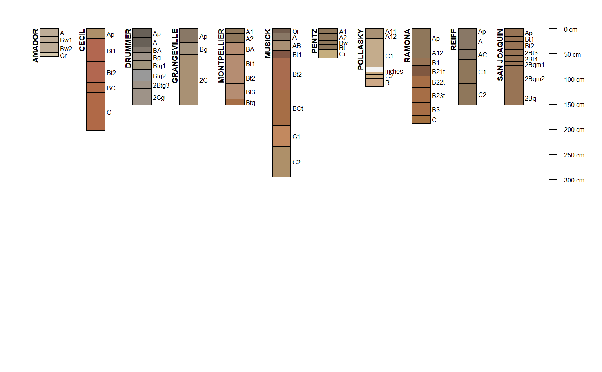

Fetch Data by Soil Series Name
fetchOSD.RdThis functions fetches a varity of data associated with named soil series, extracted from the USDA-NRCS Official Series Description text files and detailed soil survey (SSURGO). These data are periodically updated and made available via SoilWeb.
fetchOSD(soils, colorState = 'moist', extended=FALSE)
Arguments
| soils | a character vector of named soil series, case insensitive |
|---|---|
| colorState | color state for horizon soil color visualization: "moist" or "dry" |
| extended | if TRUE additional soil series summary data are returned, see details |
Details
The standard set of "site" and "horizon" data are returned as a SoilProfileCollection object (extended=FALSE. The "extended" suite of summary data can be requested by setting extended=TRUE. The resulting object will be a list with the following elements:)
- SPC
SoilProfileCollectioncontaining standards "site" and "horizon" data- competing
competing soil series from the SC database snapshot
- geomcomp
empirical probabilities for geomorphic component, derrived from the current SSURGO snapshot
- hillpos
empirical probabilities for hillslope position, derrived from the current SSURGO snapshot
- mtnpos
empirical probabilities for mountain slope position, derrived from the current SSURGO snapshot
- pmkind
empirical probabilities for parent material kind, derrived from the current SSURGO snapshot
- pmorigin
empirical probabilities for parent material origin, derrived from the current SSURGO snapshot
- mlra
empirical MLRA membership values, derrived from the current SSURGO snapshot
- climate
experimental climate summaries from PRISM stack
- metadata
metadata associated with SoilWeb cached summaries
Further details pending.
Value
a SoilProfileCollection object containing basic soil morphology and taxonomic information.
References
USDA-NRCS OSD search tools: http://www.nrcs.usda.gov/wps/portal/nrcs/detailfull/soils/home/?cid=nrcs142p2_053587
Note
SoilWeb maintains a snapshot of the Official Series Description data. Please use the link above for the live data.
See also
Examples
# \donttest{ # soils of interest s.list <- c('musick', 'cecil', 'drummer', 'amador', 'pentz', 'reiff', 'san joaquin', 'montpellier', 'grangeville', 'pollasky', 'ramona') # fetch and convert data into an SPC s.moist <- fetchOSD(s.list, colorState='moist') s.dry <- fetchOSD(s.list, colorState='dry') # plot profiles # moist soil colors if(require("aqp")) { par(mar=c(0,0,0,0), mfrow=c(2,1)) plot(s.moist, name='hzname', cex.names=0.85, axis.line.offset=-4) plot(s.dry, name='hzname', cex.names=0.85, axis.line.offset=-4) # extended mode: return a list with SPC + summary tables x <- fetchOSD(s.list, extended = TRUE, colorState = 'dry') par(mar=c(0,0,1,1)) plot(x$SPC) }#>#> List of 11 #> $ SPC :Formal class 'SoilProfileCollection' [package "aqp"] with 11 slots #> $ competing :'data.frame': 84 obs. of 3 variables: #> $ geomcomp :'data.frame': 11 obs. of 9 variables: #> $ hillpos :'data.frame': 11 obs. of 8 variables: #> $ mtnpos :'data.frame': 1 obs. of 9 variables: #> $ pmkind :'data.frame': 18 obs. of 5 variables: #> $ pmorigin :'data.frame': 33 obs. of 5 variables: #> $ mlra :'data.frame': 52 obs. of 4 variables: #> $ climate.annual :'data.frame': 88 obs. of 12 variables: #> $ climate.monthly :'data.frame': 264 obs. of 14 variables: #> $ soilweb.metadata:'data.frame': 14 obs. of 2 variables:# }